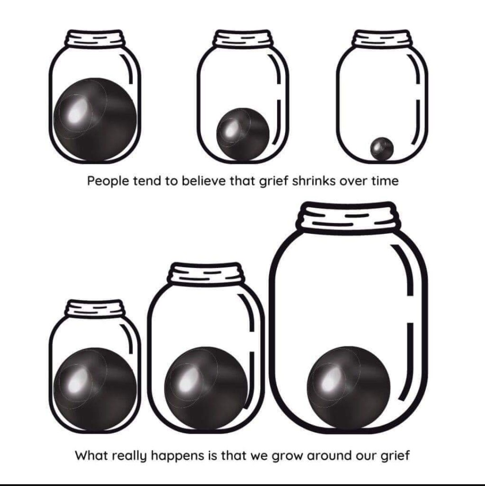

Introduction
Have you been feeling lost in any chapter of your life. Alam kong mahirap pero alam kong malalampasan mo lahat ng pagsubok sa buhay.
Magtiwala ka lang sa sarili mo. Everything will be okay if you choose to take action and be okay.
Please read on and I hope that this book may help you find what you are looking for.
Disclaimer: What I am writing isn't absolutely right/wrong. This is based on my perception on the subject. Hindi ko sinasabing tama/mali ka/ako pero masmaganda na tingnan mo din sa ibang angulo ang situation mo ngayon.
Why?
That's the biggest question that I have ever faced. Bakit nangyayari ito sakin. Paulit ulit ko na din itong tinanong sa sarili ko nung mga panahong nahihirapan ako.
Ang pinaka magandang rason na nakita ko along the way ay binigay ni Lord itong pagsubok na ito sa akin kasi alam kong malalampasan ko ito at para mas maging mabuti akong tao.
God, fate or any higher being that you believe in lets us experience our pain because it makes us stronger and better. We could endure greater pain in the future and learn from it. But we do not only live just to experience pain but also to enjoy life and everything that comes with it.
Through our darkest times, we should help ourselves to find light, hope and joy even if it only shines a little. We should be grateful for what is and what is not, what we have and what we have not. There are a lot of things going on in our life right now. You're feeling lost and grieving in your current situation but don't forget that this too will pass and you will experience joy once more.
Lost in life
I will explain a general view of feeling lost in life kasi ito din ang pinaka general na naramdaman ko dati, nararamdaman ngayon paminsan-minsan at mararamdaman sa hinaharap. Lahat ng tao ay dumadaan dito pero in a different way kaya hindi dapat natin maliitin ang nararamdaman nating pagkabalisa sa sarili natin or sa nararamdaman ng ibang tao.
Simulan na natin. Good luck!
Actions to take
Here are the following step-by-step actions that you may take if you feel lost in life:
Awareness
The first step you have to take is that you are aware of the problems you are now facing. You are aware of being lost and you acknowledge it.
Don't fight it. Don't tell yourself "Why am I lost? Why is this happening to me? I shouldn't be feeling this way. Instead, tell yourself this, "I acknowledge that I'm feeling lost right now and I know for a fact that I'll find myself. Even if it takes me a long time to find myself, I'm not giving up".
By being aware you are already halfway to finding yourself. Don't belittle this step because this is a huge one.
Evaluation
Ngayon na aware ka sa nararamdaman mo. Ang kasunod mong gawin ay i-reevaluate yung current state mo. In means of kung ano ginagawa mo araw araw, anong mga habits meron ka at kung paano mo din ginagawa ang mga bagay na ito.
I-reevaluate mo yung choices mo na ginawa ngayong araw. Kahit mag focus ka lang muna sa araw na ito. Wag mo na muna isipin ang mga nakaraan mong ginagawa.
You could reevaluate your choices in the following list:
- Does this help you to enhance your skills?
- Does this help reach your long-term goals?
- Does this help you uplift your feelings in the long run?
- Does this help you to become a healthy and fit person(physically/mentally)?
- Does this help the ones dear in your heart in any way?
- Does this lessen your dependency on others and helps you stand on your own two feet?
- When you look back to yesterday or a year after, will you not regret using your time and energy in this choice?
- This choice is for your long-term happiness, not short-term happiness(pagkatapos mong gawin, agad agad na nawawala yung saya)
- If this will take you longer than you expect, will you still commit to this choice even if you're mood changes on it?
- Does this choice make you a lesser version of myself(Bumabalik ka sa dating habit, maslumala pa or ma-acquire mo pa lang)
If you did not check almost half of the things on this list, you should try to remove/change this choice/habit by taking baby step actions. Please read on.
This list may increase and is susceptible to modification.
Tip: Even though life is short and we do not know when our time is up, you should still live and choose wisely. Use your time and energy efficiently. Choose long-term instead of short-term choices if you know that they will help you become a better person in the long run.
3, 2, 1 go and take action
Once na na evaluate mo na kung alin ang mga bagay na nakakatulong sayong desisyon/habit. Time na para magtake action. Ito na yung panahon para baguhin or tanggalin ang mga habits na yun sa buhay mo.
Pwede kang humingi ng tulong at suporta sa iba, hindi ka naman nag-iisa sa journey na ito. Pero limitado lang ang kayang tulong na maibibigay nila sayo, dedepende pa din ito sayo kung ano ba ang gusto mong path na tatahakin. Maimpluwensyahan ka man ng ibang tao, nasasayong kamay pa din iyon kung itatake mo yung advice nila or hindi. Kung magpapainpluwensya ka man, palibutan mo yung sarili mo ng mga taong alam mong makakatulong sayo, hindi lang basta nakakapagpasaya sayo.
Kung hindi mo man alam kung ano yung path na dapat mong tahakin, ayos lang yun. Lahat tayo naramdaman yan, kahit sinumang nabubuhay ngayon, baka nalilito sila kung alin ba ang tamang path na dapat nilang itake. We might be confused at the time but at the end of the day, we are still the ones creating our own paths. We are our own creation. You just have to go with your guts and pick the path that you know you will or will not enjoy but still will help you become a better person.
Now you just need to take action. Bumangon ka, and just do it. Don't think too much about it, just do it. Change and strive to be better. You don't need to rush for results, take baby steps, trust and commit to the process.
My list of taking actions that might help you.
Morning:
- Wake up early. (ex. 6-8 am)
- Magpaaraw para sa vitamin d.
- Make my own bed. Ayusin ang kama pagkakagising
- This will help trick your mind that you have accomplished already one task in the morning and will continue to do so if you please.
- Plan your day but plan the things that you can only commit to initially. Take baby steps.
- Take a bath and clean your teeth early in the morning
- As mentioned above, para maramdaman mo na may task kang natapos kahit di mo trip maligo.
- Para din ramdam mo sa sarili mo na handa mo ng tahakin ang araw ng ito. Kasi naging habit natin sa school na bago tapos pumasok, maayos na tayo. Nakaligo na tayo at lahat tapos sabak na sa acads. Same lang din yun sa buhay, pwera na lang na di ka talaga naliligo sa umaga nung nag-aaral ka. Biro lang. hehe
- EAT
- Kumain ka kahit kaunti, basta malamnan mo yung tiyan mo. This will help you feel that you are taking care of yourself even if hindi mo trip kumain. If hindi ka kasi kumain, mas clouded ang judgement mo and you will go down the rabit hole of negative thinking.
Afternoon:
- Do what you want to do.
- Try to explore new things; read books, painting and etc, but stay commited kahit mga isang linggo manlang.
- Magcommit ka ng kahit 30 mins na gawin ito araw araw. Kung di mo kayang magcommit ng 30mins, kahit 5 mins lang and along the way yung 5 mins na yun ay magiging 5 mins, 30 mins or 1hr pa. Just commit what you can and do it. Panoodin mo ito: Minihabits
- Try to help others even if you will or will not benefit from it.
- Kahit tulungan mo yung malalapit sayo sa simpleng bagay lang. Tulungan mo sa task nila para maramdaman mo din na ang sarap pala sa pakiramdam na tumulong kahit na hindi ikaw magbebenifit sa actions na yun.
- EAT
- Wag na wag mong kalimutan kumain kahit wala kang gana. Dito ka kukuha ng lakas para bumawi sa buhay mo.
Evening:
- Thank yourself for being strong and be grateful for being alive.
- Magdasal ka bago matulog or kung ano man ritual mo bago matulog. Basta at the end of the day, be thankful sa oras mong naconsume buong araw. Pede mo gamitin ang Gratitude app sa ritual mo bago matulog.
- Reflection
- Mag reflect ka sa mga nagawa mo ngayon araw if nakatulong ba ito or hindi. Alamin mo kung alin ang nagwork at alin ang hindi. I organize mo yung mind mo para magkaroon ka ng sense of peace and accountability.
- EAT
- Napapansin mo na ba yung pattern kung bakit ko laging sinasabi ito. Kasi dito tayo kumukuha ng lakas physically. Kung nadradrain na tayo mentally, tapos wala tayong lakas physically, mahihirapan talaga tayong maovercome ang kahit anong problema sa buhay natin. Kaya kung mentally drained na tayo, pilitin natin na wag tayong maging physically drained din. Isipin mo na lang na selfcare mo ito kahit na nahihirapan ka.
- Be kind to yourself.
- When we are at our lowest and we feel that we are all alone, this is the time when we should be our kindest to ourselves. Pwede mong kausapin din sarili mo, self pep talk ba. Tapos maging conscious ka din kung paano mo nga ba kausapin sarili mo, kung mabuti ba or hindi. If toxic mong kausapin sarili mo, isama mo yan sa task mo na gagawin kahit baby steps lang.
Tip:
- Do all of this with little to no dependency on others. Need mong maramdaman na hawak mo ang buhay mo kaya pinaka simpleng magagawa mo para maramdamaman mo yun is doing these task by yourself all through out. Kahit simpleng, paghuhugas ng plato or pagwawalis ng kwarto mo para maramdaman mo lang na your actions has an impact in yourself and your surrounding and para mabuo din ang idea mo on who you want to become or what paths you want to take.
- If hesitant ka na kumilos or gumalaw at napapaisip ka kung magiging effective ba yun. Pinaka mabibigay kong payo sayo ay magbilang ka ng 3 to 1 tapos tumayo ka na agad at gawin kung anuman yung gagawin mong makakatulong sayo. Hindi mo kasi malalaman talaga if di mo din itratry so why not try it. Basta alam mong makakabuti yun sayo. Panuodin mo ito: HOW TO KILL FEAR IN 5 SECONDS
Repeat and make it a habit
Now you're making progress so just keep doing it and go with the momentum. Don't let your efforts be wasted. Repeat it the next day. Make it a habit. Know which actions you want to do for the next day, next week or even next year. If it really works for you, why not do it forever? Just create habits that will help you become a better person and change or remove the habits that hinder your growth.
You should trust the process. Ako na nagsasabi sayo na hindi mo agad makikita yung results na gusto mong mangyari pero if paunti unti mo itong gagawin, tiwala ako sayong makakamit mo kahit anuman ang gustuhin mo sa buhay. Strive to be better. If you don't want to be at the moment, then atleast strive to be good to yourself.
You should also try to practice committing to the task you have started. Don't make it a habit na madami kang nasimulan pero wala kang natatapos kahit isa. Try mo munang tapusin ang isa tapos saka mo simulan yung ibang task na sa tingin mo ay makakapagpasaya sayo or makakapagpabuti sayo. Just try to practice commiting and you will see the results. Mararamdaman mo yung progress along the way. Wag mo pagsabaysabayin, 2 lang kamay mo. Enjoy!
Take Away
I would just like to share this image with you. No explanation here. What you perceive is what it is.  "Credit to the owner: link where I found it"
Stay strong. Better days are coming. You just have to believe it and in the meantime, take care of yourself. Also, try to see the enjoyment in the little details of the process you are taking as much as you can. Enjoy the little things.